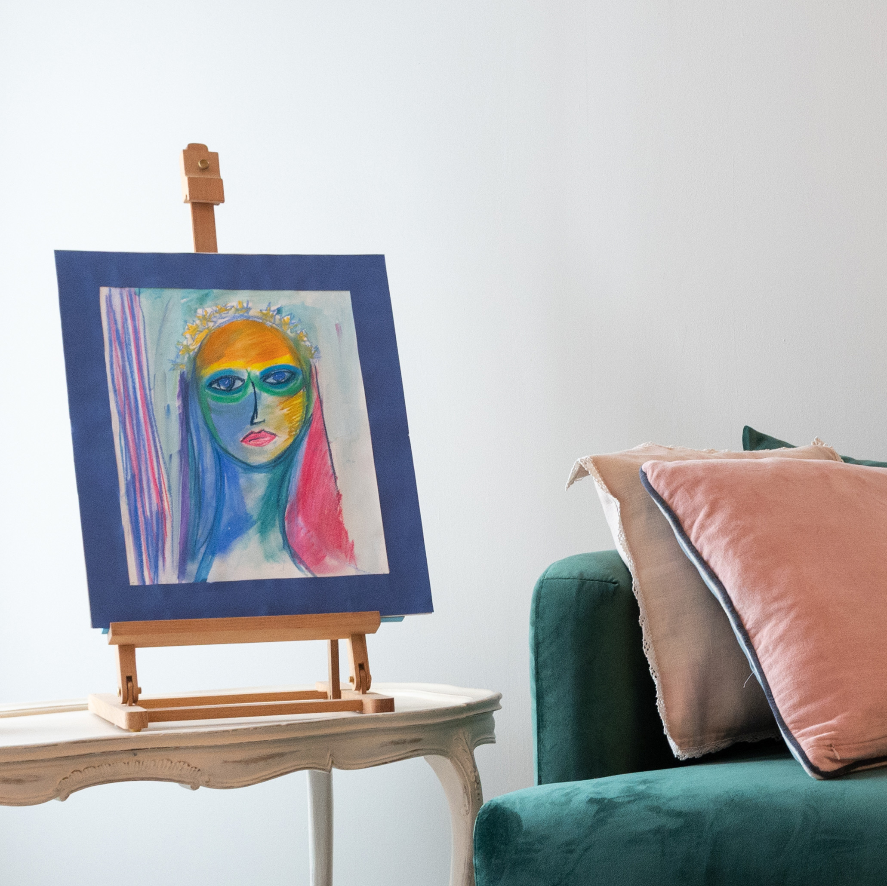
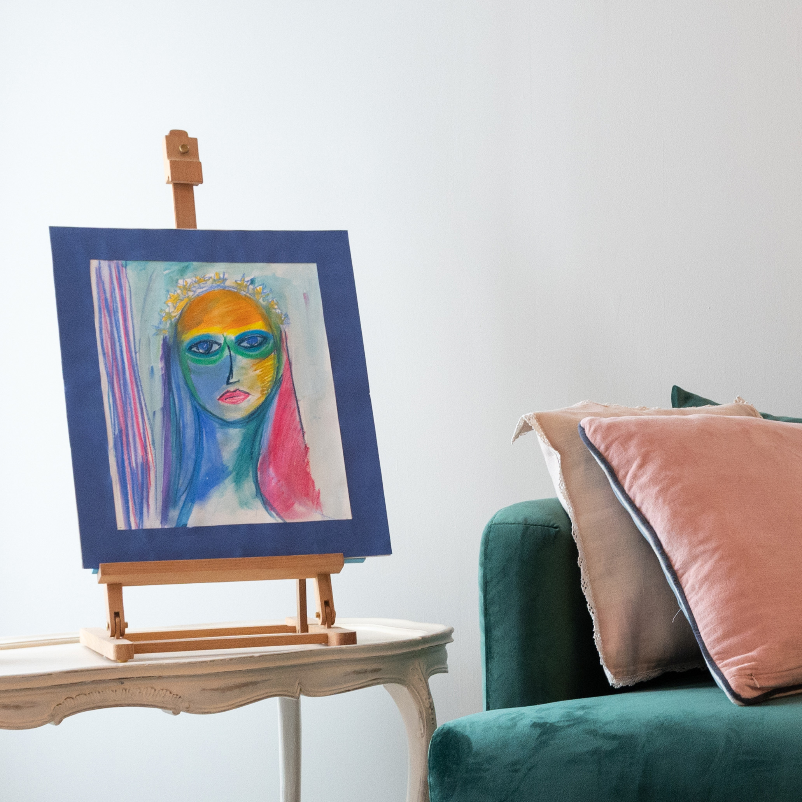

Qui suis-je ?
Psychopraticienne en Analyse Transactionnelle, j’ai à cœur de tisser avec vous un lien humain professionnel empreint d’authenticité, de confiance et de chaleur. La relation thérapeutique que nous construirons au fil des séances sera l’espace ou vous pourrez vous engager, en toute protection, sans jugement, à explorer vos difficultés, les défis auxquels vous vous confrontez et vos désirs de changement personnel. Je m’emploie à faire de cette relation l’endroit où vous pourrez expérimenter, en sécurité, de nouvelles façons de faire, d’être, de communiquer avec vous-même et avec les autres.
Titulaire d’un Master 2 du Changement et de la Communication et d’un DU de Management Relationnel de l’IAE d’Aix-en-Provence (Université Aix-Marseille), d’une Licence en Psychologie Clinique et de la Santé de l’Université Jean Jaurès de Toulouse, ainsi que d’un DEA en Communication Sociale de l’Ecole Nationale d’Etudes Politiques et Administratives de Bucarest, je me suis spécialisée en psychothérapie en suivant le cycle de formation théorique, clinique et expérientielle de l’École d’Analyse Transactionnelle de Lyon (7 ans).
Je m’appuie aussi, dans votre accompagnement, sur des qualités humaines et des savoirs-être peaufinés tout au long d’un parcours de vie et professionnel nourris par le gout de l’humain. Plus de 20 ans de journalisme et communication dans plusieurs cultures, dont dix ans au sein de la chaîne de télévision internationale Euronews, ont rendu mon écoute sensible à la richesse des vécus humains et ont affiné ma capacité à entrer en résonnance avec les histoires de vie de mes semblables.
J’ancre l’exercice de ma profession de psychopraticienne dans des valeurs fortes : le respect de l’être humain et de sa singularité, la responsabilité, la liberté. Je suis membre de l’Institut Français d’Analyse Transactionnelle et j’adhère au code déontologique de l’Association Européenne d’Analyse Transactionnelle (EATA). J’exerce ma pratique en français, anglais et roumain.

 
